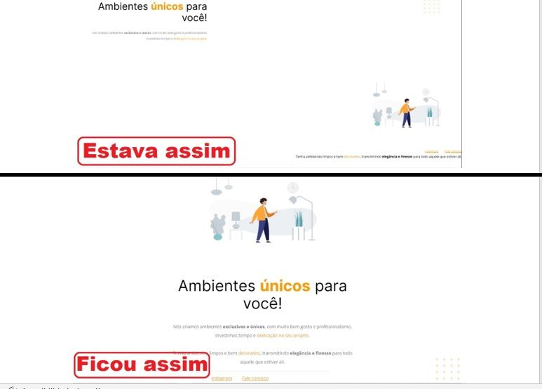

19 de maio de 2023
Um Novo Começo: Desafios e Oportunidades na Minha Jornada

Em 29/11/2022, publiquei no meu GitHub o meu primeiro desafio concluído na trilha Explorer.
Nele, recebemos um código que foi modificado e está desconfigurado, mas fomos desafiados a restaurar o design original do site.
Naquele momento, uma nova fase em minha vida se iniciava. Uma fase emocionante, repleta de desafios e oportunidades incríveis de crescimento.
19 de maio de 2023
Gratidão à Comunidade Rocketseat: Uma Jornada de Aprendizado e Evolução
Gostaria de expressar minha gratidão a toda a comunidade da Rocketseat.
Com o Maykão, iniciei minha jornada no Explorer, e sou grata pela abordagem "leve" com a qual ele transmitiu o conteúdo, tanto nas aulas "Lands" quanto nos "Stages", o que contribuiu para que minhas primeiras impressões fossem positivas e promissoras.
Com o Rodrigo, comecei a aprofundar meu conhecimento em algumas tecnologias, e sua didática tranquila despertou ainda mais minha determinação em dominar todas elas.
Por meio do Discord, fiz conexões valiosas que foram de grande importância para minha rede de contatos.
É gratificante olhar para trás e perceber o quanto já evoluí.